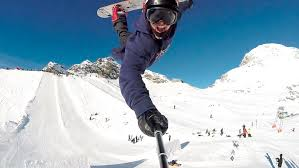

Welcome to the Ski Board & Surf Club Home Page! You can find all the current information on club activities in the various subpages found in the navigation Bar.
Everything on the earth bristled,
the bramble pricked and the green thread nibbled away,
the petal fell,
falling until the only flower was the falling itself.
takes limpid lessons from stone,
and in those functionings plays out
the unrealized ambitions of the foam.
